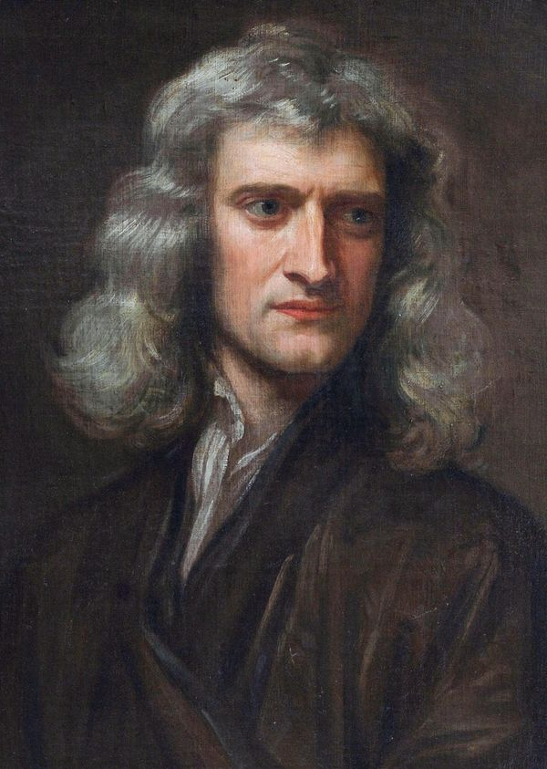

Inércia
Um corpo mantém seu estado de repouso ou movimento se nenhuma força resultante atuar sobre ele.
Explorar a primeira leiMecânica clássica · Século XVII
Do chute em uma bola à viagem de um foguete, o movimento segue regras que podemos observar e compreender. As três leis de Newton são um dos pontos de partida para explicar essas mudanças.
Elas descrevem como forças e movimento se relacionam: quando um objeto mantém seu estado, como uma força altera sua velocidade e por que toda interação envolve dois corpos.
Um mapa do movimento
Um corpo mantém seu estado de repouso ou movimento se nenhuma força resultante atuar sobre ele.
Explorar a primeira leiA força resultante sobre um corpo está relacionada à sua massa e à aceleração produzida.
Explorar a segunda leiQuando um corpo exerce uma força sobre outro, recebe dele uma força de mesma intensidade e sentido oposto.
Explorar a terceira lei
O cientista por trás das leis
Isaac Newton (1643–1727) foi um físico e matemático inglês. Em sua obra Princípios Matemáticos da Filosofia Natural, publicada em 1687, apresentou as leis do movimento e a lei da gravitação universal.
Essas ideias ajudaram a explicar fenômenos terrestres e celestes com os mesmos princípios. Seu trabalho tornou-se uma base importante da física clássica e ainda é usado para descrever muitos movimentos do cotidiano.